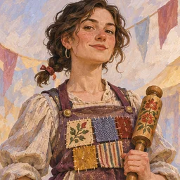
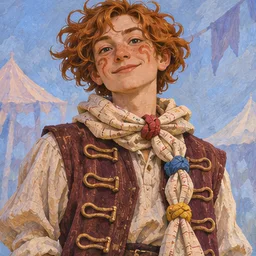
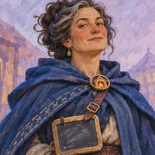
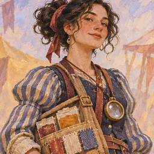
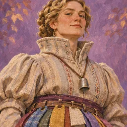
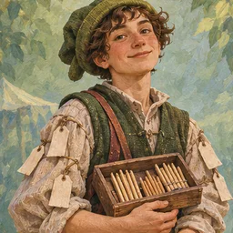
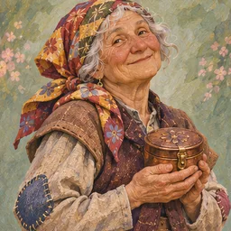
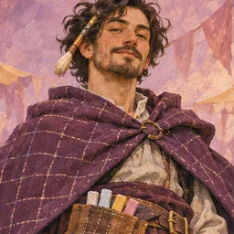

Веста Клёпка
воин 3 · ОЗ 31 · КД 11 · Скорость 30 фтМастер печатных рам и точной ручной работы
Короткая коса, фартук с нашитыми образцами ткани и деревянный валик с расписной ручкой.
Вы долго печатали чужие узоры и пришли на ярмарку придумать собственную полезную вещь. Название мастерской пока не выбрано — это общее решение.
Открыть фигурку для поля
Оружие и заклинания
Оружие · Длинный меч, Ручной топор

Мирт Примерка
плут 3 · ОЗ 24 · КД 13 · Скорость 30 фтИспытатель удобства: выясняет, что покупатель пытается сделать
Жилет с петлями вместо карманов, шарф с мерными узлами и веснушки, похожие на запятые.
В вашей семье пользуются вещами очень разного размера. Вы хотите, чтобы покупателю не приходилось подстраиваться под предмет молча.
Открыть фигурку для поля
Оружие и заклинания
Оружие · Рапира, Короткий лук

Руна Тёплый Мел
жрец 3 · ОЗ 24 · КД 11 · Скорость 30 фтХранитель ясных обещаний и способов ремонта
Синий плащ, меловая дощечка на ремне и знак маленького очага на застёжке.
Вы служите обычаю бережного ремесла: оставлять после работы понятную инструкцию и доступную замену изнашиваемой детали.
Открыть фигурку для поля
Оружие и заклинания
Оружие · Боевой посох
Заклинания · Лечащее слово, Обнаружение магии

Элли Складка
волшебник 3 · ОЗ 20 · КД 12 · Скорость 30 фтНаблюдатель материалов и неожиданных результатов
Полосатые рукава, сумка с подписанными образцами охры и ткани, круглая линза на шнурке.
Вы привыкли объяснять вещь до опыта и решили неделю поступать наоборот: сначала смотреть, что получилось.
Открыть фигурку для поля
Оружие и заклинания
Оружие · Боевой посох
Заклинания · Обнаружение магии, Туманный шаг

Бора Широкий Стежок
воин 3 · ОЗ 31 · КД 11 · Скорость 30 фтМастер полотен, выкроек и удобного рабочего места
Высокий воротник, напёрсток на шнурке и пояс с образцами тканей.
Вы шили рабочие фартуки по собственной привычке и обнаружили, что друзьям они не подходят. Теперь хотите начинать с чужого рабочего движения.
Открыть фигурку для поля
Оружие и заклинания
Оружие · Длинный меч, Ручной топор

Тави Ровный Шаг
плут 3 · ОЗ 24 · КД 13 · Скорость 30 фтПланировщик небольшой партии и последовательности работы
Бумажные ярлыки на рукавах, зелёная шапка и деревянные счётные палочки в плоской коробке.
Вы любите находить один лишний шаг в длинном деле. На этот раз хочется сократить работу, не заставляя других спешить.
Открыть фигурку для поля
Оружие и заклинания
Оружие · Рапира, Короткий лук

Сенна Латка
жрец 3 · ОЗ 24 · КД 11 · Скорость 30 фтМастер повторного применения и запасных деталей
Пёстрый платок, аккуратные заплатки на локтях и медная коробочка с пуговицами.
Вы верите, что вещь должна пережить первую сломанную деталь. На ярмарку вы принесли привычку оставлять место для ремонта.
Открыть фигурку для поля
Оружие и заклинания
Оружие · Боевой посох
Заклинания · Лечащее слово, Обнаружение магии

Яро Короткая Надпись
волшебник 3 · ОЗ 20 · КД 12 · Скорость 30 фтСоздатель понятных рисунков и первой инструкции
Кисточка за ухом, широкий пояс с мелками и плащ, расчерченный маленькими квадратами.
Ваши прежние инструкции были красивее, чем понятнее. Вы пришли написать такую, по которой незнакомец справится без вашего голоса.
Открыть фигурку для поля
Оружие и заклинания
Оружие · Боевой посох
Заклинания · Обнаружение магии, Туманный шаг